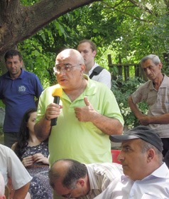

НАРУШЕНИЯ РЕЖИМА ПРЕКРАЩЕНИЯ ОГНЯ: РЕАЛЬНО ЛИ ОБЩЕСТВЕННОЕ ВМЕШАТЕЛЬСТВО?
16 июня 2012
Текали - стык границ трех южнокавказских республик
Гражданское слушание с участием жителей Акстафы, Баку, Гюмри, Гянджи, Еревана, Иджевана, Казаха, Марнеули, Ноемберяна, Тбилиси, Товуза и приграничных сел Азербайджана, Армении и Грузии.
Ассоциация «Текали», Грузия
Центр Регионального Партнерства и Развития Общин, Азербайджан
Кавказский Центр Миротворческих Инициатив, Армения
В рамках проекта «Символический суд по правам человека» при поддержке Национального Фонда Поддержки Демократии (США)
Фото: Онник Крикорян, Галина Петриашвили, Иракли Чихладзе, Александр Авсанджанишвили, Марион Кипиани, КЦМИ
Текали - стык границ трех южнокавказских республик
Гражданское слушание с участием жителей Акстафы, Баку, Гюмри, Гянджи, Еревана, Иджевана, Казаха, Марнеули, Ноемберяна, Тбилиси, Товуза и приграничных сел Азербайджана, Армении и Грузии.
Ассоциация «Текали», Грузия
Центр Регионального Партнерства и Развития Общин, Азербайджан
Кавказский Центр Миротворческих Инициатив, Армения
В рамках проекта «Символический суд по правам человека» при поддержке Национального Фонда Поддержки Демократии (США)
Фото: Онник Крикорян, Галина Петриашвили, Иракли Чихладзе, Александр Авсанджанишвили, Марион Кипиани, КЦМИ
РАУНД 1. ВВОД В ТЕМУ
Луиза Погосян: Для того, чтобы ответить на вопрос возможно ли влияние общества на ситуацию на линии соприкосновения, на мой взгляд, нужно понять, переосмыслить, что мы подразумеваем под выражением «нарушения режима прекращения огня». Мы очень часто «грешим историей» и догматически аппелируем к тому маленькому одностраничному документу, который был подписан 18 лет назад. Мы почему-то исходим из документа, во время подписания которого предполагалось, что будет первым, а не последним, что он будет своеобразным черновым, стартовым вариантом мирного соглашения. Но этого не случилось. И сегодня основываться на том, что действует или не действует именно это соглашение – это выдавать желаемое за действительное. Поэтому я предлагаю по-новому посмотреть на то, что мы называем «нарушениями режима прекращения огня». Более логично, иметь смелость и рассматривать каждый инцидент на границе как террористический акт. Лично я не вижу никакого смысла в отстреле не только мирного населения, но и военных. Смерть человека не приводит к какому-либо тактическому успеху какой-либо из сторон. Здесь используются методы террористических группировок, когда каждый акт имеет свой политический смысл, то есть делая что-то, и армянская, и азербайджанская сторона утверждает свои политические взгляды, и воздействует при этом на свое собственное общество, в котором сеет страх перед войной, или поднимает волну патриотизма. Как бы мы это не называли, влияние оказывается на все общество. И влияние это довольно многогранно, оно опосредуется практически во всех сферах общественной жизни. Эти акты дают также какие-то знаки международному сообществу.
На сегодня роль общественных институтов ограничивается раскручиванием террористической составляющей этих инцидентов. Здесь тоже необходимо уяснить, что за 20 с лишним лет многое изменилось в конфликте, и многое изменилось в обществе. Вопрос возможного влияния общества является вопросом: а есть ли вообще это общество? Сегодня ситуация такова, что, и правозащитники и политические деятели, самые лучшие из лучших, считают, что они должны заниматься своим делом: ограничивать власть, бороться за власть, но входить в гущу конфликта, в эпицентр политических спекуляций - для них это невозможно, они считают, что это наносит ущерб их делу. Но жить в условиях перманентно повторяющихся обоюдных террористических актов, которые может быть кажутся сейчас не столь опасными, и теряют свою актуальность в течение нескольких дней – чревато очень тяжелыми последствиями. Я думаю, что накопление страха, механизм постоянного ожидания вряд ли можно считать оздоровительным для общества. Это накопление в конечном счете может привести к тотальному исчезновению самого общества во всех его проявлениях. Реакция общества на то, что угрожает его существованию – возможна и естественна. Поэтому на вопрос нашего слушания я отвечаю: да, это возможно. Но только в случае, если появится что-то новое на всем Южном Кавказе, новые форматы и новые подходы.
Али Абасов: Я приветствую всех участников сегодняшней встречи, и думаю, мы все осознаем какое серьезное у нас сегодня мероприятие, насколько оно затрагивает наши интересы, и благодарю Луизу за ее очень обстоятельное отражение данной ситуации. Первый вопрос, который я хочу поставить – сделали ли гражданские общества наших республик что-нибудь для предотвращения этих инцидентов? Ответ, к сожалению, отрицательный. Общества ничего не сделали, более того, общества как бы удалены от этой проблемы, и это связано прежде всего с тем, что даже посредники считают, что как бы для гражданского общества в переговорном процессе и решении проблем карабахского конфликта нету места. На самом деле это не так, и в решающие моменты гражданское общество может и должно сказать свое мнение по тому или другому вопросу. Что касается самой проблемы. Я думаю, что здесь основное - это гуманитарный вопрос, то есть то, что происходят перестрелки и убийства людей, это есть форма казни, это есть форма уничтожения человека, в то время когда человечество приняло огромное количество документов, деклараций, различных законов, о преследовании за преступления против человечества. Вот в этих условиях идет отстрел людей и, как сказала Луиза, на самом деле никакой логики в этом отстреле нет.
Какие примеры можно привести? Было, как вы знаете, такое международное движение за предотвращение распространения противопехотных мин. Это движение не только добилось запрещения, но и стало коллективным лауреатом Нобелевской премии за свою деятельность по запрещению этого вида оружия, которое калечило не только военных, но и мирное население. В данном случае у нас примерно такая же проблема. Страдают не только люди, рискующие своей жизнью, военные, но это часто происходит с совершенно мирными людьми и происходит, более того, с детьми, что абсолютно недопустимо. Поэтому я, продолжая мысль Луизы, хочу сказать, что нам действительно необходима организация, эта организация должна быть международной, то есть мы можем включить туда людей, которые имеют вес, имеют свое слово в мировой практике. Это должны быть и правозащитники и представители общественности, и может быть даже представители некоторых государственных структур, которые, например, занимаются тем же разминированием, и т.д. Вот такая организация она должна выступить, на мой взгляд, с заявлением, и в этом первоначальном заявлении должна быть отражена как гуманитарная, так и правовая сторона этого вопроса. То есть необходимы формулировки и для этого нам, если мы придем к такому выводу, понадобятся юристы. Нам нужно сформулировать конкретное заявление, которое будет опираться как на международное право, так и гуманитарные принципы, принимаемые всеми людьми.
Тут важно чтобы была работа. Часто наши мероприятия тем и заканчиваются, что мы собираемся, очень мило проводим время, и потом через некоторое время где-то еще встречаемся, но дело наше как бы остается. Тут вопрос можно поставить следующий: стреляют ведь не только в каких-то людей, стреляют в нас, могут убить нас, могут убить нашего ребенка, могут убить нашего родственника. То есть это вопрос, который является жизненно важным вопросом. Это вопрос имеет еще и непосредственно человеческую сторону, и потом если гражданское общество молчит по отношению к такому вандализму и варварству, я думаю, что было бы хорошо, учитывая то что было здесь сказано и будет еще сказано, все же заняться этим вопросом серьезно. Я думаю также, что вот такая организованность, она позволила бы нам в будущем решать и другие вопросы, не менее острые, чем скажем, этот вопрос. А форма сотрудничества между сторонами это как раз и есть вот то доверие, которое у нас сложилось. Я не знаю есть ли здесь люди, которые видят логику в этих отстрелах, перестрелках? Если такие люди есть, я бы послушал их доводы, потому что я как бы таких доводов не нахожу.
Какие примеры можно привести? Было, как вы знаете, такое международное движение за предотвращение распространения противопехотных мин. Это движение не только добилось запрещения, но и стало коллективным лауреатом Нобелевской премии за свою деятельность по запрещению этого вида оружия, которое калечило не только военных, но и мирное население. В данном случае у нас примерно такая же проблема. Страдают не только люди, рискующие своей жизнью, военные, но это часто происходит с совершенно мирными людьми и происходит, более того, с детьми, что абсолютно недопустимо. Поэтому я, продолжая мысль Луизы, хочу сказать, что нам действительно необходима организация, эта организация должна быть международной, то есть мы можем включить туда людей, которые имеют вес, имеют свое слово в мировой практике. Это должны быть и правозащитники и представители общественности, и может быть даже представители некоторых государственных структур, которые, например, занимаются тем же разминированием, и т.д. Вот такая организация она должна выступить, на мой взгляд, с заявлением, и в этом первоначальном заявлении должна быть отражена как гуманитарная, так и правовая сторона этого вопроса. То есть необходимы формулировки и для этого нам, если мы придем к такому выводу, понадобятся юристы. Нам нужно сформулировать конкретное заявление, которое будет опираться как на международное право, так и гуманитарные принципы, принимаемые всеми людьми.
Тут важно чтобы была работа. Часто наши мероприятия тем и заканчиваются, что мы собираемся, очень мило проводим время, и потом через некоторое время где-то еще встречаемся, но дело наше как бы остается. Тут вопрос можно поставить следующий: стреляют ведь не только в каких-то людей, стреляют в нас, могут убить нас, могут убить нашего ребенка, могут убить нашего родственника. То есть это вопрос, который является жизненно важным вопросом. Это вопрос имеет еще и непосредственно человеческую сторону, и потом если гражданское общество молчит по отношению к такому вандализму и варварству, я думаю, что было бы хорошо, учитывая то что было здесь сказано и будет еще сказано, все же заняться этим вопросом серьезно. Я думаю также, что вот такая организованность, она позволила бы нам в будущем решать и другие вопросы, не менее острые, чем скажем, этот вопрос. А форма сотрудничества между сторонами это как раз и есть вот то доверие, которое у нас сложилось. Я не знаю есть ли здесь люди, которые видят логику в этих отстрелах, перестрелках? Если такие люди есть, я бы послушал их доводы, потому что я как бы таких доводов не нахожу.
Юрий Манвелян: Насчет общественного вмешательства при нарушении перемирия, я тоже хочу здесь о смыслах поговорить: что значит вмешательство и что значит перемирие. Надо осознавать, что на границе, на линии фронта, по обе стороны стоят ребята, которым не удалось отмазаться от армии или которым не удалось заплатить за то, чтобы проходить службу в тыловой части. И то, что они гибнут или становятся инвалидами, далеко не интересует тех, кто отдает эти приказы. Ясно, что это политические решения, уже было сказано, что никаких тактических и стратегических вопросов не решается гибелью этих солдатиков. И когда мы говорим вмешательство, это значит препятствование проводимой в регионе политике, мы должны осознавать, кому мы мешаем проводить эту политику, с кем мы имеем дело.
Власти конфликтующих сторон все эти годы делают именно все, чтобы минимизировать, или вообще исключить любое вмешательство какого либо значительного количества людей, которые живут здесь, в принятие решений вообще. Власти окружили себя не только силовыми структурами, но что более опасно и более страшно - кольцом экспертов, миротворцев, правозащитников и журналистов, так называемых. Власть окружена этим и люди, которые пытаются повлиять на решения, они будут биты не только прямо силовиками, но и этими людьми которые, якобы, являются нашими коллегами, журналистами. И эти структуры, они обеспечивают функционирование власти, воспроизводство - а что есть власти в наших странах, это - люди, которые в первую очередь должны быть главными капиталистами, это люди, которые стоят во главе кланов, которые занимаются очень большим бизнесом. Самая расхожая монета в данном случае - это призыв к замалчиванию внутренних проблем, ради противостояния угрозам внешним. Мы имеем дело вот с этой ситуацией. Но в тоже время власти не заинтересованы в развертывании крупномасштабных боевых действий, они именно балансируют на том, чтобы диверсии и вылазки носили разовый характер, так как развертывание войны, надо понимать очень хорошо, приведет к потере власти. Как бы то ни было, это произойдет, потому что придут новые люди, оружие будет у всех, и люди, которые все это время живут в нелучших условиях, под прессом, под давлением, эти люди не исключено, что захотят решать свои собственные проблемы. И насколько эффективным менеджером будет власть в случае войны? Давайте посмотрим на людей, которые импортируют полумиллионные автомобили, которые живут как арабские шейхи. И насколько эти люди могут быть эффективными командирами во время войны? То есть крупная война все же будет угрозой для их власти. Поэтому вот на этом балансе они как-то выезжают: держать в страхе войны людей, но не начинать саму войну.
Власти конфликтующих сторон все эти годы делают именно все, чтобы минимизировать, или вообще исключить любое вмешательство какого либо значительного количества людей, которые живут здесь, в принятие решений вообще. Власти окружили себя не только силовыми структурами, но что более опасно и более страшно - кольцом экспертов, миротворцев, правозащитников и журналистов, так называемых. Власть окружена этим и люди, которые пытаются повлиять на решения, они будут биты не только прямо силовиками, но и этими людьми которые, якобы, являются нашими коллегами, журналистами. И эти структуры, они обеспечивают функционирование власти, воспроизводство - а что есть власти в наших странах, это - люди, которые в первую очередь должны быть главными капиталистами, это люди, которые стоят во главе кланов, которые занимаются очень большим бизнесом. Самая расхожая монета в данном случае - это призыв к замалчиванию внутренних проблем, ради противостояния угрозам внешним. Мы имеем дело вот с этой ситуацией. Но в тоже время власти не заинтересованы в развертывании крупномасштабных боевых действий, они именно балансируют на том, чтобы диверсии и вылазки носили разовый характер, так как развертывание войны, надо понимать очень хорошо, приведет к потере власти. Как бы то ни было, это произойдет, потому что придут новые люди, оружие будет у всех, и люди, которые все это время живут в нелучших условиях, под прессом, под давлением, эти люди не исключено, что захотят решать свои собственные проблемы. И насколько эффективным менеджером будет власть в случае войны? Давайте посмотрим на людей, которые импортируют полумиллионные автомобили, которые живут как арабские шейхи. И насколько эти люди могут быть эффективными командирами во время войны? То есть крупная война все же будет угрозой для их власти. Поэтому вот на этом балансе они как-то выезжают: держать в страхе войны людей, но не начинать саму войну.
Что значит вмешиваться с точки зрения руководства, что значит гражданское общество, или общественное вмешательство? Это в первую очередь угроза тому большому бизнесу, который сросся с властью. И именно ради этого есть институт оправдания насилия в отношении других: инакомыслящих, задающих вопросы, ставящих, поднимающих вопросы, находящих противоречие ... Что значит еще вмешательство – это территория, пространство действия. Мы можем говорить об эффективности или неэффективности вмешательства, можем анализировать, что распался бы, например, Советский Союз, если бы не упали цены на нефть. Возможно, нет. Тогда имеет ли смысл, допустим, деятельность академика Сахарова или других людей, которые не принимали власть как таковую? Все равно дождались бы падения цен на нефть, в данном случае, и все бы изменилось. Но я отвечаю, да, имеет смысл, потому что речь идет о воздухе, об этом вот пространстве, которое мы создаем друг для друга и для людей, которые нуждаются в этом пространстве. Пространство для того, чтобы задавать эти вопросы, вопросы самые разные. Почему стреляют в предвыборный период? Почему главы наших стран встречаются в России с местным президентом только ради того, чтобы подписать или договориться об обмене военнопленными? В обычной практике для этого надо обязательно встречаться на высшем уровне? То есть до чего мы дошли, и где мы, почему для обмена военнопленными власти должны встречаться в присутствии третьей стороны? Почему пятичасовая закрытая встреча не вызывает никаких вопросов? Почему делегации парламентов, члены различных партий, могут разъезжать, ехать в Баку из Армении и наоборот, но людям, которые не во власти – этого не дано, и это пресекается на корню. Для меня вопрос вмешательства и не вмешательства это прежде всего вопрос того, останусь ли я в профессии или нет. Если я приму, что это все бессмысленно, то значит зачем я вообще занимаюсь тем, чем занимаюсь. Спасибо.
Магеррам Гойушоглу: Я представитель приграничного района. Армяно-азербайджанский конфликт не обходит нас стороной, мы живем в этом конфликте 24 года. И я поддерживаю своих коллег, которые говорили, что да действительно, за 24 года конфликта нанесены очень глубокие раны и создана пропасть между нашими людьми. Уже 18 лет как подписано соглашение о прекращении огня между сторонами, но, к сожалению, оно не выполняется. Мне было бы очень интересно знать, какой из сторон выгодны эти нарушения режима прекращения огня: Армении или Азербайджану? Или третьим государствам? Я, как азербайджанец, могу сказать, что это невыгодно Азербайджану. Я даже знаю, что это не выгодно и Армении, потому что это означает кровь, смерть, разрушения. Создан психологический барьер между людьми, которые могут просто сесть за стол и поговорить друг с другом. Как может влиять общественность Армении и Азербайджана на это, если, как я знаю, она не очень-то сильна в своих странах? Гражданское общество в этом вопросе полностью изолировано и находится под контролем государства. И когда нарушается перемирие, мы, конечно, слышим звуки обстрелов, и потом уже узнаем, сколько и с каких сторон были жертвы. И как представитель местного НПО, я считаю, что нужно создать модель координации для работы в этом направлении.
Самвел Исраелян: Нагорно-карабахский конфликт считается одним из затянувшихся конфликтов в мире. Несмотря на усилия мирового сообщества, стороны конфликта не могут прийти к мирному соглашению, приемлемому как для политических руководств, так и для обществ конфликтующих сторон. Минская группа ОБСЕ, взявшая на себя посредническую миссию в решении нагорно-карабахского вопроса, в основном оперирует политическими инструментами и пытается достичь мирного соглашения между руководствами Армении и Азербайджана. По обыкновению, верховные власти Армении и Азербайджана, поставленные перед фактом подписания того или иного соглашения, ссылаются на внутреннее давление со стороны общества, и заводят в тупик процесс переговоров. В то же время, множество иностранных правительственных и неправительственных организаций проводит различные программы для сближения обществ конфликтующих сторон. Но, по большому счету, политические и общественные процессы, нацеленные на урегулирование нагорно-карабахского конфликта, не только не взаимосвязаны, но иногда даже противоречат друг другу. Примером может служить всем знакомая картина, когда власти Армении и Азербайджана перед мировым сообществом выражают готовность к нахождению мирных путей для урегулирования конфликта, но внутри страны выступают с военной риторикой и поощряют крайние выражения (псевдо)националистических идеологий. Для различных международных и миротворческих организаций давно должно было стать ясным, что разрозненные усилия на политическом и общественном фронтах не только не приводят к каким-либо результатам, но, в определенном смысле, усложняют ситуацию и являются пустой тратой (а может и отмыванием) огромных средств.
Принимая во внимание генезис нынешних руководств Армении и Азербайджана, можно констатировать, что им не выгодно действительно мирное и окончательное разрешение конфликта. В обеих странах нынешние руководители пришли к власти на волне войны. Необъявленное военное положение не только является кормушкой для властей, но оправдывает также бедственное положение собственных граждан. После урегулирования нагорно-карабахского конфликта националистическая идеология потеряет актуальность и неминуемо акселерируются демократические преобразования в обществе и во власти. Политический истэблишмент Армении и Азербайджана всячески пытается убедить общество, что мирного решения карабахской проблемы не существует, что армяне и азербайджанцы генетически несовместимы, что победа останется за сильным, т.е. нам суждено жить в военном положении. А по законам военного положения, такие категории, как социальная справедливость, верховенство закона, права человека, как известно, отходят на второй план.
Принимая во внимание генезис нынешних руководств Армении и Азербайджана, можно констатировать, что им не выгодно действительно мирное и окончательное разрешение конфликта. В обеих странах нынешние руководители пришли к власти на волне войны. Необъявленное военное положение не только является кормушкой для властей, но оправдывает также бедственное положение собственных граждан. После урегулирования нагорно-карабахского конфликта националистическая идеология потеряет актуальность и неминуемо акселерируются демократические преобразования в обществе и во власти. Политический истэблишмент Армении и Азербайджана всячески пытается убедить общество, что мирного решения карабахской проблемы не существует, что армяне и азербайджанцы генетически несовместимы, что победа останется за сильным, т.е. нам суждено жить в военном положении. А по законам военного положения, такие категории, как социальная справедливость, верховенство закона, права человека, как известно, отходят на второй план.
Наивно было бы полагать, что мировое сообщество не замечает двойную игру и неискренность намерений властей Армении и Азербайджана. Но главные игроки на мировой арене имеют свои собственные интересы в данном регионе. Геополитические развития показывают, что сферы интересов крупных держав на Ближнем Востоке, в Средней Азии и на Кавказе еще не разделены, или, по крайней мере, не достигнуто всестороннее соглашение по разделу сфер влияний. Нынешние власти Армении и Азербайджана, которыми легко манипулировать, почти идеально подходят мировому сообществу для создания противовесов влиянию той или иной мировой силы, и для недопущения полноценного контроля какой-либо страны над нашим регионом. В этом контексте становится понятным неспешность основных мировых игроков в вопросе урегулирования нагорно-карабахского конфликта.
Неразрешенность нагорно-карабахского конфликта является прямым препятствием для нормального развития не только Армении и Азербайджана, но и всего региона. Непрерывная эскалация напряженности, фактическая милитаризация сторон конфликта, непрекращаемые антиармянские и антиазербайджанские агитации, происходящие в настоящее время – все это чревато возобновлением войны. По обе стороны конфликта все чаще слышны призывы горячих голов прибегнуть к радикальным способам решения данного конфликта. На повестке дня в обществах двух стран активно обсуждают якобы существующую возможность военного решения карабахского конфликта. Ужасным является то, что общества в целом без особого труда вовлекаются в игры властей, как то происходило в Европе накануне Второй мировой войны.
Последние инциденты на границе, в результате которых обе стороны понесли людские потери, казалось бы, должны были вывести общества из гипнотического состояния. Но, затяженность конфликта, ультранационалистическая агитация властей, кажущаяся безвыходность ситуации - все это привели к тому, что общества потеряли инстинкт самосохранения. С обеих сторон многие понимают, что новая война будет затяжной и более масштабной. Обе стороны будут нести огромные людские потери, в регионе начнется гуманитарная катастрофа. Трудно оценить экономические последствия возможной войны, можно только сказать, что они будут очень тяжелыми. О демократических преобразованиях и свободах, тех небольших достижениях активной части общества за долгие годы, можно и позабыть. Не только конфликтующие стороны, но и регион в целом, будет отброшен в развитии на долгие годы назад, навсегда будут упущены нереализованные возможности развития. Очевидно, что победителя в новой войне не будет.
Неразрешенность нагорно-карабахского конфликта является прямым препятствием для нормального развития не только Армении и Азербайджана, но и всего региона. Непрерывная эскалация напряженности, фактическая милитаризация сторон конфликта, непрекращаемые антиармянские и антиазербайджанские агитации, происходящие в настоящее время – все это чревато возобновлением войны. По обе стороны конфликта все чаще слышны призывы горячих голов прибегнуть к радикальным способам решения данного конфликта. На повестке дня в обществах двух стран активно обсуждают якобы существующую возможность военного решения карабахского конфликта. Ужасным является то, что общества в целом без особого труда вовлекаются в игры властей, как то происходило в Европе накануне Второй мировой войны.
Последние инциденты на границе, в результате которых обе стороны понесли людские потери, казалось бы, должны были вывести общества из гипнотического состояния. Но, затяженность конфликта, ультранационалистическая агитация властей, кажущаяся безвыходность ситуации - все это привели к тому, что общества потеряли инстинкт самосохранения. С обеих сторон многие понимают, что новая война будет затяжной и более масштабной. Обе стороны будут нести огромные людские потери, в регионе начнется гуманитарная катастрофа. Трудно оценить экономические последствия возможной войны, можно только сказать, что они будут очень тяжелыми. О демократических преобразованиях и свободах, тех небольших достижениях активной части общества за долгие годы, можно и позабыть. Не только конфликтующие стороны, но и регион в целом, будет отброшен в развитии на долгие годы назад, навсегда будут упущены нереализованные возможности развития. Очевидно, что победителя в новой войне не будет.
Учитывая существующую угрозу возобновления военных действий, представляя страшные последствия и безысходность новой войны, принимая невозможность сохранения нынешнего состояния «ни войны, ни мира», веря в возможность действительно взаимовыгодного, мирного решения карабахского конфликта, активная часть обществ Армении, Азербайджана и Нагорного Карабаха должна предпринять следующие меры:
- заявить о себе и выдвинуть инициативу - требование о предотвращении (неприятия) войны,
- дать понять властям, что новая война будет не гарантом их власти и неприкосновенности, а послужит поводом их свержения и наказания,
- консолидировать действия: укрепить существующие связи между армянскими и азербайджанскими миротворцами и создать новые платформы для сотрудничества,
- в обществах активировать дискуссию об альтернативных вариантах решения карабахского конфликта. Общество должно принимать активное участие в нахождении мирного плана урегулирования нагорно-карабахского конфликта.
Я считаю, что Текали очень хорошая платформа для такого начинания. Я хочу подчеркнуть, что до сих пор власти говорили, что решение нагорно-карабахского конфликта это их прерогатива. То есть, общества, вы не вмешивайтесь, мы сами друг с другом договоримся и решим вопросы, но мы видим, что они не только не договариваются но ситуация все более усугубляется. Я предлагаю, чтобы по возможности мы создали, стали зарождением того общества, которое смогло бы привнести вот эту дискуссию в наших странах, что возможно мирное решение этого конфликта и что это решение надо находить именно в обществе, в дискуссиях, в таких встречах и дебатах. Спасибо. По практической стороне вопроса у меня тоже есть предложения, но скажу позже, потому что мое время закончилось.
- заявить о себе и выдвинуть инициативу - требование о предотвращении (неприятия) войны,
- дать понять властям, что новая война будет не гарантом их власти и неприкосновенности, а послужит поводом их свержения и наказания,
- консолидировать действия: укрепить существующие связи между армянскими и азербайджанскими миротворцами и создать новые платформы для сотрудничества,
- в обществах активировать дискуссию об альтернативных вариантах решения карабахского конфликта. Общество должно принимать активное участие в нахождении мирного плана урегулирования нагорно-карабахского конфликта.
Я считаю, что Текали очень хорошая платформа для такого начинания. Я хочу подчеркнуть, что до сих пор власти говорили, что решение нагорно-карабахского конфликта это их прерогатива. То есть, общества, вы не вмешивайтесь, мы сами друг с другом договоримся и решим вопросы, но мы видим, что они не только не договариваются но ситуация все более усугубляется. Я предлагаю, чтобы по возможности мы создали, стали зарождением того общества, которое смогло бы привнести вот эту дискуссию в наших странах, что возможно мирное решение этого конфликта и что это решение надо находить именно в обществе, в дискуссиях, в таких встречах и дебатах. Спасибо. По практической стороне вопроса у меня тоже есть предложения, но скажу позже, потому что мое время закончилось.
Натиг Джавадлы: Почему нет общественного мнения и общественного влияния? Потому что в обеих государствах не появилось сильного демократического государства и правительства. И международным организациям тоже выгодно такое положение, потому что их интересует только нефть и геополитика. Воспользовавшись этим состоянием, местные политики превратили Карабах в инструмент обогащения. И этот процесс превратился в катастрофу для двух народов. Посмотрите, за эти 20 лет сколько раз менялась власть, и как каждое правительство пришло к власти под лозунгами Карабаха. Тер-Петросян и Эльчибей имели возможность договориться, но этого не допустили. Потому что Россия не хотела, чтобы в регионе был мир, а Запад интересовала нефть. В обоих наших государствах карабахская тема превратилась в монополию. В Армении хотя бы есть институты и в парламенте проходят дискуссии, а в Азербайджане последняя дискуссия в парламенте по карабахскому вопросу была в 2001 году. В 2000-ом году были проведены выборы, и оппозиция проиграла эти выборы. Гейдару Алиеву нужно было поменять повестку дня, и поэтому он разрешил опубликовать предложение, которое было выдвинуто на переговорах. В Азербайджане могут быть какие-то социальные проблемы, но самой главной проблемой остается Карабах, и никто не может об этом говорить, потому что правительство оказывает давление.
Я как журналист думаю, что работа международных организаций должна состоять в том, чтобы они требовали от своих государств и правительств, чтобы те оказывали влияние на армянское и азербайджанское правительство, чтобы развивались демократические процессы в этих государствах. Только после того как будет развиваться демократия, только после этого, между народами возможны переговоры. Если бы были демократические государства, мы бы могли проводить эти встречи в Армении и Азербайджане, а не здесь в Грузии.
Я как журналист думаю, что работа международных организаций должна состоять в том, чтобы они требовали от своих государств и правительств, чтобы те оказывали влияние на армянское и азербайджанское правительство, чтобы развивались демократические процессы в этих государствах. Только после того как будет развиваться демократия, только после этого, между народами возможны переговоры. Если бы были демократические государства, мы бы могли проводить эти встречи в Армении и Азербайджане, а не здесь в Грузии.


РАУНД 2. КОММЕНТАРИИ К СКАЗАННОМУ
Луиза Погосян: Наверно, чтобы было интересно, нам нужно спорить. Поэтому поделюсь своим наблюдением. На каждой армяно-азербайджанской встрече всегда есть зеркальность позиций. Я думаю Самвел и Натиг сегодня взглянули в это зеркало. Насколько я поняла, вы как бы всю вину за происходящее возлагаете на фактор нелегитимности наших правительств. У меня такой вопрос, допустим создалась оппозиция и прошли легитимные выборы, большинством голосов избран какой-либо президент, если в его программе, например, в программе армянской оппозиции нету четкого сформулированного сценария разрешения конфликта, например, немедленного возращения 6 оккупированных районов Азербайджана взамен на признание независимости Карабаха со стороны Азербайджана, какие изменения в этом случае могут быть? Если в этой, важнейшей как вы считаете борьбе за демократию, к власти вдруг придет легитимно избранный президент – где гарантии того, что как-либо изменится ситуация в зоне конфликта? И не потому ли выборы, утверждающие власть большинства, кажутся сказкой для наших стран, что сейчас это большинство, в силу того, что есть конфликт, есть террор - это большинство поддается террору и поддерживает этот террор. И даже легитимная власть большинства в наших странах не сможет решить те проблемы, которые у нас есть, то есть обеспечить безопасность людей.
Cлово вмешательство имеет корень «мешать». Я думаю, что те миротворческие явления в наших обществах, которые противопоставляются тому состоянию, которое мы охарактеризовали, они, только своим существованием, дают какую-то надежду. Но, к сожалению, для изменения ситуации «мешать» недостаточно. Даже «мешание» не помогает, не освобождает от ответственности за то, что происходит сегодня.
В своем слове Маггерам мягко выразил требование изменения ситуации от имени человека, который живет под пулями. Я могу мешать по мере своих сил тому, что происходит в Армении, это может длиться бесконечно долго, и на смену мне могут прийти новые мешающие. Но, на мой взгляд, необходима третья, заинтересованная в изменении ситуации, сторона.
Эту сторону я вижу в Грузии, которая является стороной, в силу ее физической близости к границе, в силу ее независимости от наших правительств, которые обречены быть не легитимными, в силу того, что Грузия может понять, на уровне ментальности, что такое постсоветский конфликт, и как плохо закрывать глаза на то, какие есть развития в этом конфликте. Армяно-азербайджанский конфликт находится именно в той зоне, где убивают людей. Этот конфликт не находится в столицах, или где то, конфликт происходит, материализуется в приграничной зоне. Достаточно иметь какое-то влияние на приграничье и это приедет к сдвигу в политическом разрешении конфликта. Единственная страна, у которой, на мой взгляд, есть ресурс войти в самую гущу конфликта - это Грузия, граждане Грузии. И грузинское вмешательство может быть конструктивным.
Cлово вмешательство имеет корень «мешать». Я думаю, что те миротворческие явления в наших обществах, которые противопоставляются тому состоянию, которое мы охарактеризовали, они, только своим существованием, дают какую-то надежду. Но, к сожалению, для изменения ситуации «мешать» недостаточно. Даже «мешание» не помогает, не освобождает от ответственности за то, что происходит сегодня.
В своем слове Маггерам мягко выразил требование изменения ситуации от имени человека, который живет под пулями. Я могу мешать по мере своих сил тому, что происходит в Армении, это может длиться бесконечно долго, и на смену мне могут прийти новые мешающие. Но, на мой взгляд, необходима третья, заинтересованная в изменении ситуации, сторона.
Эту сторону я вижу в Грузии, которая является стороной, в силу ее физической близости к границе, в силу ее независимости от наших правительств, которые обречены быть не легитимными, в силу того, что Грузия может понять, на уровне ментальности, что такое постсоветский конфликт, и как плохо закрывать глаза на то, какие есть развития в этом конфликте. Армяно-азербайджанский конфликт находится именно в той зоне, где убивают людей. Этот конфликт не находится в столицах, или где то, конфликт происходит, материализуется в приграничной зоне. Достаточно иметь какое-то влияние на приграничье и это приедет к сдвигу в политическом разрешении конфликта. Единственная страна, у которой, на мой взгляд, есть ресурс войти в самую гущу конфликта - это Грузия, граждане Грузии. И грузинское вмешательство может быть конструктивным.
Али Абасов: Дорогие друзья, как вы видите, у нас получаются не дебаты, а как бы коллегиальный обмен мнениями, при котором все развивают одну и ту же мысль, приводя разные доводы. Но тем не менее, сложились как бы две точки зрения. Первая состоит в том, что власти не дадут никому ничего делать по этой проблеме. Я сам большой критик властей на Южном Кавказе, очень люблю этим заниматься. И вторая позиция, что гражданское общество должно само что-то делать и организовывать. Вы знаете, западные политики очень часто нас обвиняют – они говорят, что вы, на Южном Кавказе, хотите сразу решить все проблемы, вы хотите сразу - всего. Так не бывает, надо идти медленными постепенными шагами, а вы думаете, что нет, или нам сразу же нужно все, что хотим. Действительно есть такая у нас беда, мы любим быть максималистами в любом вопросе, а данный вопрос такой, что здесь как раз нельзя быть максималистами, надо идти от первых организационных шагов.
Я думаю, одним из таких шагов мог бы быть мониторинг, который мог бы быть проведен двумя сторонами, гражданский мониторинг, поскольку постольку информация которая поступает в прессу она бывает обработанной, и там очень трудно что-то понять. В нашей прессе пишут, что начала армянская сторона, рядом в Армении пишут, что азербайджанская сторона начала. На самом деле, оружие - уже повод для того, чтобы стрелять. Какие-то политические решения – тоже повод для того, чтобы стрелять. Но к нам не должен этот вопрос относится. Критиковать власти можно по этому вопросу, но в данном случае нам необходимо может быть начать с самокритики. Вы готовы это дело делать? Сегодняшняя встреча может стать тем начинанием, которое может привести к изменению ситуации? Если да, то надо предпринимать конкретные шаги. Из всех тех очень хороших сегодня выступлений выбрать более приемлемые варианты, сделать это нашим общим делом, потому что созданием мафии ни один вопрос не решается – мы должны тоже создать свою мафию, благородную мафию, которая будет не убивать. Я думаю, что этот вопрос достаточно важный, что этот вопрос первый из тех вопрос, где стороны могут найти понимание.
Доверие в этом вопросе оно может быть максимальным и от этого первого шага можно идти дальше. Это очень важно. Я согласен что без участия Грузии нас ожидает провал по самым разным причинам, но вместе с тем хочу сказать, что вообще наши проекты очень часто бывают двухсторонними, и на самом деле они должны быть трехсторонними, я имею ввиду по количеству стран которые представлены, по тому насколько переплетаются наши проблемы, насколько мы схожи своей динамикой, своим развитием, в своих ошибках и тд. Я думаю что этот опыт всегда и везде пригодится. Конечно, в идеале было бы, чтобы вот то движение, которое, может быть громкие слова буду говорить, которое сегодня начинается, оно приобрело международное значение и получило бы международное признание. Вот это очень важно, я считаю. Если мы сможем вот этими своими очередными шагами, постепенно, постепенно завоевать международное признание... Уверяю вас, у меня иногда создается впечатление, что власти сами в этом вопросе загнаны в тупик. Знаете как бы не было кто бы не управлял - это люди. Убийство никому не приносит никаких ощущений радостных эмоций и т.д. Тем более в такой форме. Я уже сказал, что в принципе на самом деле это казнь. Человек, которого казнят, он знает что его казнят. Поэтому давайте мы как бы сделаем вид, что власти нет. Это очень хорошая позиция, правда? Мы будем делать свое дело - как оно получится - никто не будет виноват кроме нас и никто не заслужит похвалу, кроме нас.
Модератор: Спасибо за такой конструктивный подход, вы фактически толкаете нас к действию.
Али Абасов: Подталкиваю.
Я думаю, одним из таких шагов мог бы быть мониторинг, который мог бы быть проведен двумя сторонами, гражданский мониторинг, поскольку постольку информация которая поступает в прессу она бывает обработанной, и там очень трудно что-то понять. В нашей прессе пишут, что начала армянская сторона, рядом в Армении пишут, что азербайджанская сторона начала. На самом деле, оружие - уже повод для того, чтобы стрелять. Какие-то политические решения – тоже повод для того, чтобы стрелять. Но к нам не должен этот вопрос относится. Критиковать власти можно по этому вопросу, но в данном случае нам необходимо может быть начать с самокритики. Вы готовы это дело делать? Сегодняшняя встреча может стать тем начинанием, которое может привести к изменению ситуации? Если да, то надо предпринимать конкретные шаги. Из всех тех очень хороших сегодня выступлений выбрать более приемлемые варианты, сделать это нашим общим делом, потому что созданием мафии ни один вопрос не решается – мы должны тоже создать свою мафию, благородную мафию, которая будет не убивать. Я думаю, что этот вопрос достаточно важный, что этот вопрос первый из тех вопрос, где стороны могут найти понимание.
Доверие в этом вопросе оно может быть максимальным и от этого первого шага можно идти дальше. Это очень важно. Я согласен что без участия Грузии нас ожидает провал по самым разным причинам, но вместе с тем хочу сказать, что вообще наши проекты очень часто бывают двухсторонними, и на самом деле они должны быть трехсторонними, я имею ввиду по количеству стран которые представлены, по тому насколько переплетаются наши проблемы, насколько мы схожи своей динамикой, своим развитием, в своих ошибках и тд. Я думаю что этот опыт всегда и везде пригодится. Конечно, в идеале было бы, чтобы вот то движение, которое, может быть громкие слова буду говорить, которое сегодня начинается, оно приобрело международное значение и получило бы международное признание. Вот это очень важно, я считаю. Если мы сможем вот этими своими очередными шагами, постепенно, постепенно завоевать международное признание... Уверяю вас, у меня иногда создается впечатление, что власти сами в этом вопросе загнаны в тупик. Знаете как бы не было кто бы не управлял - это люди. Убийство никому не приносит никаких ощущений радостных эмоций и т.д. Тем более в такой форме. Я уже сказал, что в принципе на самом деле это казнь. Человек, которого казнят, он знает что его казнят. Поэтому давайте мы как бы сделаем вид, что власти нет. Это очень хорошая позиция, правда? Мы будем делать свое дело - как оно получится - никто не будет виноват кроме нас и никто не заслужит похвалу, кроме нас.
Модератор: Спасибо за такой конструктивный подход, вы фактически толкаете нас к действию.
Али Абасов: Подталкиваю.
Юрий Манвелян: Было сказано о невозможности диалога в условиях отсутствия демократии и было сказано, что даже если представим этот демократический процесс, например, выборы, мало-мальски честные, то все равно на вопросе Карабаха это не отразится. Я, конечно, с этим не согласен, потому что если представить этот демократический процесс, преобразования в двух странах, если представить даже выборы, то выборы - это не день голосования и не опускание бюллетеней в ящик, это функционирование таких институтов как журналистика. Это превращение образования – школьного, дошкольного, университетского - в образование, а не в то, во что это превращается у нас. Это когда гуманитарные науки снова превращаются в науки, а не в то, что сейчас у нас есть. Поэтому в этом процессе, если журналисты будут заниматься журналистикой, будет больше возможностей донесения, вынесения этих позиций, которые будут звучать не здесь, а в прямом эфире какого-то самого популярного телеканала. Демократический процесс все-таки поможет решить этот конфликт, и когда мы говорим общественность или люди не хотят, нет этих механизмов, чтобы узнать чего люди хотят – все заблокировано. Если я буду сегодня судить о том, что думают в Азербайджане, об общественном мнении Азербайджана, по русскоязычной он-лайн прессе, то это будет сплошной ужас и у меня не будет никакого стимула вообще участвовать в каких-то мероприятиях. Но я, слава богу, знаю не только то, что транслируют вот эти русскоязычные интернет сайты, то же самое я могу сказать и об армянских интернет ресурсах. Но есть какая-то трещина, пробоина, есть какие-то люди, которые, занимаются журналистикой. Поэтому, я думаю, демократический процесс он приблизит и сделает более возможным вообще решение, или возможность по капле приходить к какому-то решению.
Магеррам Гойушоглу: Я хочу обратиться с вопросом. Азербайджанское государство в этих переговорах поддерживает территориальную целостность. Общественным мнением эта позиция тоже поддерживается. Как армянская общественность смотрит на это? Какую позицию занимает армянская общественность? Уважаемые коллеги, вы обвиняете власти или государство обеих сторон. Я согласен, что нужны и у нас, и у вас демократические процессы, поскольку мы сейчас слабы в этом отношении. Но я хочу знать, могут ли общественные организации снять психологический барьер между народами? Во время этого конфликта, в том районе, где я живу появилось кладбище погибших. Если я пойду сегодня и скажу народу, что компромисс возможен, то не знаю, какой будет реакция тех матерей, у которых погибли сыновья. Как можно преодолеть эти психологические барьеры? Я хочу выдвинуть на обсуждение этот вопрос – преодоление психологического барьера. Фактически в этом и есть наша роль.
Магеррам Гойушоглу: Я хочу обратиться с вопросом. Азербайджанское государство в этих переговорах поддерживает территориальную целостность. Общественным мнением эта позиция тоже поддерживается. Как армянская общественность смотрит на это? Какую позицию занимает армянская общественность? Уважаемые коллеги, вы обвиняете власти или государство обеих сторон. Я согласен, что нужны и у нас, и у вас демократические процессы, поскольку мы сейчас слабы в этом отношении. Но я хочу знать, могут ли общественные организации снять психологический барьер между народами? Во время этого конфликта, в том районе, где я живу появилось кладбище погибших. Если я пойду сегодня и скажу народу, что компромисс возможен, то не знаю, какой будет реакция тех матерей, у которых погибли сыновья. Как можно преодолеть эти психологические барьеры? Я хочу выдвинуть на обсуждение этот вопрос – преодоление психологического барьера. Фактически в этом и есть наша роль.
Самвел Исраелян: Меня приятно удивило, что участники в основном едины во мнении, и азербайджанские, и армянские – едины во мнении что решение конфликта, действительно мирное решение конфликта, зависит от отсутствия легитимности власти и от международной коньюктуры. Что из этого следует? Из этого следует, что общество наших стран имеет возможность каким-то образом воздействовать на процессы, происходящие вокруг конфликта. Если власти будут легитимными, отпадет необходимость в националистической риторике, которую используют сегодня власти всегда указывая народу свое место. Говоря, что вы имеете врагов, вы находитесь в опасности. То есть при демократическом обществе главным вопросом станет, как найти решение конфликта. Сегодня ни общество, ни политики не имеют такого вопроса на повестке дня. Я предлагаю, чтобы наше общество активировало свою деятельность в этом направлении, то есть чтобы мы попытались сами находить решения, сами открывать дискуссии и вместе подходить к каким-то решениям и почему нет, навязывать властям это решение, то есть пытаться каким-то образом подействовать на власти, чтоб власти отказались от этой военной риторики, которой они все время пытаются запугивать наши народы. По правде говоря, Магеррам поднял очень серьезные и болезненные вопросы. Поверьте они имеют ответы. Матери, которые потеряли своих сыновей, есть по обе стороны границы, очень трудно для них, очень больно, и не только этим матерям, но и для остального общества. Но все люди должны понять, чтобы не было повторения, чтобы список этих матерей не пополнялся, чтобы люди не продолжали умирать ни за что - надо начать, надо начать с нуля. Подвести такую нулевую черту и начиная с этого момента – действовать.
Натиг Джавадлы: Я не утверждаю, что как только установится легитимная власть, карабахская проблема сразу же будет решаться. Процесс должен пойти постепенно, общества должны быть прозрачными, и все общества должны избавиться от коррупции. Я хочу рассказать кое-что. Когда я был в Швеции, русский журналист увидев памятник Карлу Двенадцатому, спросила: Карл 12-ый ведь проиграл войну, зачем ему поставили памятник? Я ответил: Если бы он не проиграл войну – не было бы сейчас такого государства, как сегодняшняя Швеция. Посмотрите теперь на Россию и Швецию, и сравните как живут эти государства. Должны усилиться демократические институты и этот процесс должен усиливаться. Правительства должны работать с обществами и международным сообществом, особенно с Россией. Основной проблемой на Южном Кавказе остается то, что создание демократии здесь - прерогатива Путина. И демократизация России в наших интересах.
Натиг Джавадлы: Я не утверждаю, что как только установится легитимная власть, карабахская проблема сразу же будет решаться. Процесс должен пойти постепенно, общества должны быть прозрачными, и все общества должны избавиться от коррупции. Я хочу рассказать кое-что. Когда я был в Швеции, русский журналист увидев памятник Карлу Двенадцатому, спросила: Карл 12-ый ведь проиграл войну, зачем ему поставили памятник? Я ответил: Если бы он не проиграл войну – не было бы сейчас такого государства, как сегодняшняя Швеция. Посмотрите теперь на Россию и Швецию, и сравните как живут эти государства. Должны усилиться демократические институты и этот процесс должен усиливаться. Правительства должны работать с обществами и международным сообществом, особенно с Россией. Основной проблемой на Южном Кавказе остается то, что создание демократии здесь - прерогатива Путина. И демократизация России в наших интересах.

РАУНД 3. ВОПРОСЫ И ОТВЕТЫ
Мамука Купарадзе, Тбилиси, Грузия: Добрый день, приветствую этот формат, поддерживаю и желаю удачи участникам и гостям. У меня вопрос такой: отличается ли мнение гражданского общества от политических целей урегулирования? Цели урегулирования конфликта в обеих сторонах похожи или нет? По-моему стороны в конфликтах по-разному видят и по-разному идут к разрешению конфликта. Вот в чем схожи ваши цели?
Галина Петриашвили, Тбилиси, Грузия: Я участница ряда миротворческих проектов с женской точки зрения. Вы знаете, я с большим интересом послушала то, что вы сказали и реально это очень важный проект. Я очень уважаю, то, что вы делаете, и поэтому я часто бываю с вами. Но меня озадачивает следующий момент - когда мы говорим обо всем начиная с легитимности власти, кончая вообще чей Карабах. Отдайте - а вот не отдадим, а вот отдайте - а вот не отдадим. То есть, понимаете, когда мы говорим, что надо идти шаг за шагом, нужно отсекать какие-то вещи, которые мы сейчас совершенно не в состоянии решить в этом формате. Мне кажется, критически важно для этого проекта сосредоточиться на каких-то вещах, которые нам по зубам – вам, нам по зубам, которые мы можем решить, не вступая в конфронтацию еще и друг с другом. Я думаю, мы понимаем, о чем мы говорим.
Вот мы находимся здесь: Грузия – посредник, эта грузинская деревня, которая на границе – прекрасно. Может быть, мы можем говорить о серьезных вещах, но более локальных, чем территориальный вопрос. Например, я бы говорила о языке вражды, о национализмах с обеих сторон. Заканчивая, скажу еще одну вещь. Недавно я приехала из Гориса – это на границе с Лачинским районом, и вот там говорят: какой кошмар и ужас – человек работал в саду, а его убили. Я возвращаюсь в Тбилиси, на второй день встречи приезжают азербайджанские женщины и говорят – представляешь, у нас убили ребенка. Вот шальная пуля и вот так. При этом и там, и там - ярая взаимная ненависть. Вот мне кажется, что если взять вот этот вопрос и как-то стараться, используя медиа, как-то вот эти минные поля взаимной ненависти нейтрализовать, снять этот язык вражды. Если на этом сосредоточиться, то было бы классно. Мне кажется, что нужно как-то исходить из реальности и двигаться очень постепенно. Это мое мнение и вопрос – что вы думаете по этому поводу?
Галина Петриашвили, Тбилиси, Грузия: Я участница ряда миротворческих проектов с женской точки зрения. Вы знаете, я с большим интересом послушала то, что вы сказали и реально это очень важный проект. Я очень уважаю, то, что вы делаете, и поэтому я часто бываю с вами. Но меня озадачивает следующий момент - когда мы говорим обо всем начиная с легитимности власти, кончая вообще чей Карабах. Отдайте - а вот не отдадим, а вот отдайте - а вот не отдадим. То есть, понимаете, когда мы говорим, что надо идти шаг за шагом, нужно отсекать какие-то вещи, которые мы сейчас совершенно не в состоянии решить в этом формате. Мне кажется, критически важно для этого проекта сосредоточиться на каких-то вещах, которые нам по зубам – вам, нам по зубам, которые мы можем решить, не вступая в конфронтацию еще и друг с другом. Я думаю, мы понимаем, о чем мы говорим.
Вот мы находимся здесь: Грузия – посредник, эта грузинская деревня, которая на границе – прекрасно. Может быть, мы можем говорить о серьезных вещах, но более локальных, чем территориальный вопрос. Например, я бы говорила о языке вражды, о национализмах с обеих сторон. Заканчивая, скажу еще одну вещь. Недавно я приехала из Гориса – это на границе с Лачинским районом, и вот там говорят: какой кошмар и ужас – человек работал в саду, а его убили. Я возвращаюсь в Тбилиси, на второй день встречи приезжают азербайджанские женщины и говорят – представляешь, у нас убили ребенка. Вот шальная пуля и вот так. При этом и там, и там - ярая взаимная ненависть. Вот мне кажется, что если взять вот этот вопрос и как-то стараться, используя медиа, как-то вот эти минные поля взаимной ненависти нейтрализовать, снять этот язык вражды. Если на этом сосредоточиться, то было бы классно. Мне кажется, что нужно как-то исходить из реальности и двигаться очень постепенно. Это мое мнение и вопрос – что вы думаете по этому поводу?


Ниязи Мехти, Баку, Азербайджан: Аргентина - демократическая страна, но проблема Фолклендских островов, пока что, кажется, не решена. Насколько знаю, проблема Гибралтара - тоже. Не считаете ли Вы, что исходя из всех этих фактов, надо как то скорректировать тот тезис, который мне тоже нравится, что решение карабахского проблемы в том, чтобы обе стороны были демократическими?
Георгий Ванян, Ереван, Армения: Дорогие друзья, сегодня здесь собрались люди из нашего приграничья. И давайте не будем забывать о теме сегодняшнего слушания. Анализ геополитики не даст ответа на наши вопросы, потому что на границе погибают наши 18 летние-19 летние дети, армяне и азербайджанцы. Прошу вас не забывать, что тема наша: можем ли мы, люди, граждане, влиять вмешиваться, предотвращать это варварство. Армяно-азербайджанский конфликт для бакинца и для ереванца – это одно, и нечто другое, когда постоянно находишься под пулями. В детских садах, в школах, или наши дети, которые служат в наших армиях. Давайте не будем забывать, что в итоге мы не только будем голосовать формально, голосование ответ на вопрос - мы можем или нет. То есть, парализовал ли конфликт нас, или мы еще что-то можем предпринимать? То есть, можем ли мы не согласиться с тем, чтобы наши дети погибали и делать какие-то конкретные шаги, о которых уже сказал Али Абасов, и которым наши докладчики уже идут? Я бы очень хотел выслушать мнение людей, которые на линии фронта живут, и людей, чьи дети на линии фронта погибают каждый день.
Сабина Талыбова, Марнеули, Грузия: Вот господин Георгий еще раз акцентировал, что давайте будем голосовать, давайте будем решать, может ли гражданское общество, человеческий фактор повлиять на ход событий в урегулировании нагорно-карабахского конфликта, а именно конфликта между армяно-азербайджанским населением. Знаете, для того, чтобы проголосовать за или против, я, как гражданка Грузии, будучи этнической азербайджанкой, не могу никак понять, насколько я могу повлиять положительно, в моем случае, на вот эти вот все процессы. Госпожа Луиза говорила, что она уверена, что наше влияние, я имею в виду грузинское влияние, принесет к продуктивным результатам. Но она не конкретизировала именно какое влияние. Я хочу сказать, что в Грузии азербайджанцы и армяне, даже в разгар армяно-азербайджанской войны имели прекрасные взаимоотношения, то есть здесь в Грузии не было такого языка враждебности между нашими народами. Возможно, внутри себя каждый из обеих сторон питал эту вражду, но на взаимоотношениях это не чувствовалось. То есть внутри самой Грузии есть стабильные и дружественные и коллегиальные взаимоотношения. Вот что именно Вы имеете в виду - как граждане Грузии могут повлиять на этот ход? Пожалуйста, вносите более конкретные свои предложения, чтобы мы знали, за что мы голосуем. Так как поднять руку и просто проголосовать за это, еще не означает, что мы без конкретики можем что-либо сделать. Второй момент, вот господин Али подчеркнул, что Грузия, как государство, может внести свою положительную лепту. Господин Юра отметил в своем докладе, что наши президенты встречаются в России, и это очень важный факт, что Россия влияет на такие малозначительные вопросы, которые мы можем решать сами, говоря мы, я имею в виду армянскую и азербайджанскую стороны.
Георгий Ванян, Ереван, Армения: Дорогие друзья, сегодня здесь собрались люди из нашего приграничья. И давайте не будем забывать о теме сегодняшнего слушания. Анализ геополитики не даст ответа на наши вопросы, потому что на границе погибают наши 18 летние-19 летние дети, армяне и азербайджанцы. Прошу вас не забывать, что тема наша: можем ли мы, люди, граждане, влиять вмешиваться, предотвращать это варварство. Армяно-азербайджанский конфликт для бакинца и для ереванца – это одно, и нечто другое, когда постоянно находишься под пулями. В детских садах, в школах, или наши дети, которые служат в наших армиях. Давайте не будем забывать, что в итоге мы не только будем голосовать формально, голосование ответ на вопрос - мы можем или нет. То есть, парализовал ли конфликт нас, или мы еще что-то можем предпринимать? То есть, можем ли мы не согласиться с тем, чтобы наши дети погибали и делать какие-то конкретные шаги, о которых уже сказал Али Абасов, и которым наши докладчики уже идут? Я бы очень хотел выслушать мнение людей, которые на линии фронта живут, и людей, чьи дети на линии фронта погибают каждый день.
Сабина Талыбова, Марнеули, Грузия: Вот господин Георгий еще раз акцентировал, что давайте будем голосовать, давайте будем решать, может ли гражданское общество, человеческий фактор повлиять на ход событий в урегулировании нагорно-карабахского конфликта, а именно конфликта между армяно-азербайджанским населением. Знаете, для того, чтобы проголосовать за или против, я, как гражданка Грузии, будучи этнической азербайджанкой, не могу никак понять, насколько я могу повлиять положительно, в моем случае, на вот эти вот все процессы. Госпожа Луиза говорила, что она уверена, что наше влияние, я имею в виду грузинское влияние, принесет к продуктивным результатам. Но она не конкретизировала именно какое влияние. Я хочу сказать, что в Грузии азербайджанцы и армяне, даже в разгар армяно-азербайджанской войны имели прекрасные взаимоотношения, то есть здесь в Грузии не было такого языка враждебности между нашими народами. Возможно, внутри себя каждый из обеих сторон питал эту вражду, но на взаимоотношениях это не чувствовалось. То есть внутри самой Грузии есть стабильные и дружественные и коллегиальные взаимоотношения. Вот что именно Вы имеете в виду - как граждане Грузии могут повлиять на этот ход? Пожалуйста, вносите более конкретные свои предложения, чтобы мы знали, за что мы голосуем. Так как поднять руку и просто проголосовать за это, еще не означает, что мы без конкретики можем что-либо сделать. Второй момент, вот господин Али подчеркнул, что Грузия, как государство, может внести свою положительную лепту. Господин Юра отметил в своем докладе, что наши президенты встречаются в России, и это очень важный факт, что Россия влияет на такие малозначительные вопросы, которые мы можем решать сами, говоря мы, я имею в виду армянскую и азербайджанскую стороны.

Вы посмотрите, когда у нас в 2008 году был конфликт – это и вслепую видно, что этот конфликт был у нас с Россией, мы не конфликтуем с нашими гражданами. И вы посмотрите, если Грузия, как страна выдвинет свою медиаторскую кандидатуру в урегулировании нагорно-карабахского конфликта, не навлечет ли это еще одну агрессию на саму Грузию со стороны России. Пожалуйста, когда мы будем говорить об этом, давайте подумаем еще о том, что наша страна сама не мало потерпела от той же самой России. То есть это для меня очень важно. Еще. Я хотела коснуться демократии. Мы говорим в нашей этой дискуссии, что если демократия в обоих странах – имею ввиду Армению и Азербайджан - будет усиливаться и развиваться, то это как бы приведет к скорейшему урегулированию нагорно-карабахского конфликта. Давайте не будем забывать что наш кавказский менталитет он намного сильнее любой демократии. Почему? Если мы, горячие кровью люди, настолько друг к другу привязаны, мы же вот встречаясь в другой стране, в нейтральной, мы умеем друг с другом нормально здороваться, умеем друг с другом, ну как бы сказать, завязывать хорошие человеческие отношения – это означает, что наш менталитет может побороть язык вражды. И другой момент – демократии у нас, я имею ввиду на Кавказе – это не демократия на Западе или в Европе. У нас совершенно другой формат демократии может быть. И для того, чтобы мы понимали, что такое демократия, мы конечно же не должны забывать, что у нас есть свои собственные внутренние ценности. Спасибо большое.
Армен Варданян, Гюмри, Ереван: Я бы хотел небольшие итоги подвести и потом, сделать предложение или задать вопрос. Мы имеем дело с властью, с людьми, которые узурпировали власть, с преступной, скажем, группой узурпирующей власть. Я говорю об Армении, не думаю, что в Азербайджане очень отличается ситуация. Все это люди, которые узурпировали власть и с помощью каких-то лозунгов - поддержания образа врага в первую очередь, пытаются эту власть удержать. Мое мнение - что надо делать в первую очередь - в первую очередь напрашивается очень простой ясный ответ - ломать образ врага. Как это делать? Культура. Вот Заур мне вчера рассказывал историю очень интересную, когда одна азербайджанская женщина приезжала со свадьбы из Армении. Сегодня, Ашот, с которым я работаю уже несколько лет, а знаком вообще несколько десятков лет рассказал историю, как азербайджанец в начале конфликта, когда у нас было землетрясение, приезжал на собственной машине, чтоб помочь в Армении людям пострадавшим от землетрясения. Насчет демократии я еще одну вещь хотел сказать - демократия, это конечно, прекрасная вещь к которой мы все стремимся, но давайте не забывать, что посредством демократических выборов в свое время в Германии к власти пришли фашисты. На демократию ставить это самое основное ударение – невозможно. Я считаю, что основное ударение можно и нужно ставить только и только на культуру – убивать, разрушать образ врага. Я сам человек кино, поэтому я так говорю. Если мы снимем из этих двух историй фильмы, это будет еще один кирпичик в стенку разрушения образа врага. Тавталогия получилась, извините.
Армен Варданян, Гюмри, Ереван: Я бы хотел небольшие итоги подвести и потом, сделать предложение или задать вопрос. Мы имеем дело с властью, с людьми, которые узурпировали власть, с преступной, скажем, группой узурпирующей власть. Я говорю об Армении, не думаю, что в Азербайджане очень отличается ситуация. Все это люди, которые узурпировали власть и с помощью каких-то лозунгов - поддержания образа врага в первую очередь, пытаются эту власть удержать. Мое мнение - что надо делать в первую очередь - в первую очередь напрашивается очень простой ясный ответ - ломать образ врага. Как это делать? Культура. Вот Заур мне вчера рассказывал историю очень интересную, когда одна азербайджанская женщина приезжала со свадьбы из Армении. Сегодня, Ашот, с которым я работаю уже несколько лет, а знаком вообще несколько десятков лет рассказал историю, как азербайджанец в начале конфликта, когда у нас было землетрясение, приезжал на собственной машине, чтоб помочь в Армении людям пострадавшим от землетрясения. Насчет демократии я еще одну вещь хотел сказать - демократия, это конечно, прекрасная вещь к которой мы все стремимся, но давайте не забывать, что посредством демократических выборов в свое время в Германии к власти пришли фашисты. На демократию ставить это самое основное ударение – невозможно. Я считаю, что основное ударение можно и нужно ставить только и только на культуру – убивать, разрушать образ врага. Я сам человек кино, поэтому я так говорю. Если мы снимем из этих двух историй фильмы, это будет еще один кирпичик в стенку разрушения образа врага. Тавталогия получилась, извините.
Александр Авсанджанишвили, Тбилиси, Грузия: Тут и вопрос, и предложение, в рамках микрошагов и в рамках возможности действия общественных организаций. Значит вот вопрос: были ли попытки конкретного расследования каждого случая открытия огня: кто виновники, кто дал приказ, или это был, так сказать, приступ безумия какого-то? Опять же мое предложение, собственно, как раз в рамках возможностей общественных организаций, проводить такое расследование с обеих сторон. Как я понимаю, с обеих сторон это всегда безлично – кто-то открыл, кто-то стрелял, люди погибли, а из-за чего – неизвестно. То есть если каждый этот случай будет расследован – по чьему приказу, или по чьему безумному приступу был открыт огонь, то соответственно это возложит уже личную ответственность на открывающего огонь, и я думаю многие воздержаться в таком случае нажимать на курок. Так что опять-таки повторяю вопрос, были ли попытки провести расследование?
Заур Даргали, Марнеули, Грузия: Я просто хочу на минутку вернуться к теме насчет культуры. Когда мы будем, допустим, решать проблему культурой, нужно будет еще подумать о том, как решить проблему долмы и сари гялин. И у меня вопрос к обеим сторонам, здесь присутствуют представители общественного сектора, и мне интересно – разрабатываются вообще в обеих странах какие-то механизмы того, какими именно шагами будут решаться проблемы армяно-азербайджанских отношений - то есть, разрабатываются ли аналитические документы? То есть, допустим, появился такой шанс: что мы должны сделать в первую очередь, что мы должны сделать во вторую очередь? Есть ли этот механизм, или кто-то думал об этом?
Ладо Чараташвили, Тбилиси, Грузия: Я вот хочу высказать свое мнение, мне кажется, сколько бы мы ни говорили здесь, пока Россия остается в регионе, никакой конфликт не решится. Эту нашу встречу, эту нашу платформу надо начать с того, чтобы Россия убиралась и это надо однозначно зафиксировать в том документе, за который вы будете голосовать. Чтобы она оставила нас в покое и мы остались бы между собой. Чтобы мы сами все решили. Я очень внимательно слушал, и эти конфликты, которые у нас в регионе происходят, я не вижу ключ к разрешению вместе с Россией. Это не решится никогда. И демократия Грузию тоже не спасла, и грузинский конфликт тоже не разрешила.
Заур Даргали, Марнеули, Грузия: Я просто хочу на минутку вернуться к теме насчет культуры. Когда мы будем, допустим, решать проблему культурой, нужно будет еще подумать о том, как решить проблему долмы и сари гялин. И у меня вопрос к обеим сторонам, здесь присутствуют представители общественного сектора, и мне интересно – разрабатываются вообще в обеих странах какие-то механизмы того, какими именно шагами будут решаться проблемы армяно-азербайджанских отношений - то есть, разрабатываются ли аналитические документы? То есть, допустим, появился такой шанс: что мы должны сделать в первую очередь, что мы должны сделать во вторую очередь? Есть ли этот механизм, или кто-то думал об этом?
Ладо Чараташвили, Тбилиси, Грузия: Я вот хочу высказать свое мнение, мне кажется, сколько бы мы ни говорили здесь, пока Россия остается в регионе, никакой конфликт не решится. Эту нашу встречу, эту нашу платформу надо начать с того, чтобы Россия убиралась и это надо однозначно зафиксировать в том документе, за который вы будете голосовать. Чтобы она оставила нас в покое и мы остались бы между собой. Чтобы мы сами все решили. Я очень внимательно слушал, и эти конфликты, которые у нас в регионе происходят, я не вижу ключ к разрешению вместе с Россией. Это не решится никогда. И демократия Грузию тоже не спасла, и грузинский конфликт тоже не разрешила.
Малхаз Чемия, Тбилиси, Грузия: Я конфликтолог – специалист по разжиганию и по урегулированию конфликтов. Так как в 90-е годы участвовал в грузино-осетинской войне и в абхазской тоже, но зато с 98-го по 2002-ой участвовал в программе Еврокомиссии по реабилитации зоны грузино-осетинского конфликта. И я практически видел в 98-ом году, когда с ОБСЕ и с Евросоюзом, на ихней машине мы заходили в Цхинвали, нам было опасно выходить из машины. Через два года, когда мы начали частично – половину для грузинского населения, половину для осетинского населения, экономические проекты и культурные тоже, через два - три года мы спокойно ходили в Джаве и в Цхинвали, и даже лари появился в Цхинвали и в Джаве. Практически к 2002 году грузино-осетинский конфликт и на общественном уровне, и на политическом уровне, неофициально был решен. Эта практика у нас есть. И как это можно перенести в азербайджано-армянские отношения? Есть политические движения, есть общественные движения, которые мы представляем. Мы не можем трансформироваться в политическую партию, хотя политическое освещение нам нужно, необходимо. Вот тут был вопрос: какие есть модели урегулирования проблемы Карабаха. Конечно, армяне, никто даже, если согласился бы, не может заявить, что он согласен отдать, вернуть Карабах или оккупированные территории Азербайджану. Так? Также ни один азербайджанец не согласится с нарушением целостности своего государства. Но есть модели, есть платформа Эмерсона, есть платформы стабилизации Южного Кавказа, есть многие технологии европейцами апробированные, которые тут могут работать. Я с вами согласен, что тут есть фактор мешающий, но даже российский фактор в этих моделях представлен конструктивно. Если Кавказский союз или Кавказский регион сможет сбалансировать интересы внутрикавказских регионов – карабахского, абхазского и осетинского в транснациональных интересах – перспектива мирного урегулирования есть. Тогда наши заявления, что мы хотим без крови урегулировать этот конфликт, не останутся только декларацией.
Так что мы сейчас, я конкретно, сейчас обращаюсь к госпоже Луизе и господину Георгию: уже который, четвертый или пятый раз мы собираемся, обсуждаем очень даже актуальные вопросы, очень даже. Я ожидал, честно говоря, что организационно мы сможем продвинуться более, трансформироваться как общественная организация и международная – можем трансформироваться, конечно, с помощью наших международных доноров или коллег. И создавать структуры от имени организации – основываясь не на индивидах – даже героических индивидах – а на организацию, и в Грузии, и в Азербайджане, и в Армении. Тогда и Россия дополнительную агрессию не создаст, потому что мы впишемся в то русло, в то течение, которое на Кавказе существует. Вопрос к вам - какие структуры, какие организационные вопросы должны быть решены и какие проблемы тоже будут на этом пути? Я бы хотел услышать ваше мнение.
Так что мы сейчас, я конкретно, сейчас обращаюсь к госпоже Луизе и господину Георгию: уже который, четвертый или пятый раз мы собираемся, обсуждаем очень даже актуальные вопросы, очень даже. Я ожидал, честно говоря, что организационно мы сможем продвинуться более, трансформироваться как общественная организация и международная – можем трансформироваться, конечно, с помощью наших международных доноров или коллег. И создавать структуры от имени организации – основываясь не на индивидах – даже героических индивидах – а на организацию, и в Грузии, и в Азербайджане, и в Армении. Тогда и Россия дополнительную агрессию не создаст, потому что мы впишемся в то русло, в то течение, которое на Кавказе существует. Вопрос к вам - какие структуры, какие организационные вопросы должны быть решены и какие проблемы тоже будут на этом пути? Я бы хотел услышать ваше мнение.
Луиза Погосян: Я постараюсь вывести прозвучавшие вопросы и ответить на те, на которые у меня есть ответы. Что я имею в виду сама – когда говорю об участии Грузии. На самом деле, наверно я слишком обобщенно говорила об этом, и не понятно говорила. Попробую переформулировать. На самом деле, у правозащитников нет национальности. И грузинский правозащитник не является каким-то особенным. Это уже третья встреча в Текали, и может этого мало, но, на мой взгляд, выявлена самая главная проблема – наша инертность. Каждый человек, конечно, бросится спасать жизнь другого, и конечно захочет иметь такую возможность - спасать чью-то жизнь. Но самый важный вопрос, на который он не знает ответа, где ему для этого быть и что делать. Сидеть и думать на эту тему одному – очень трудно. Можем ли мы трансформироваться в организацию, в структуру у которой есть члены – люди, которым эта организация будет давать ответ на вопрос, где им надо быть и что делать, чтобы предотвращать потерю жизни или нанесение вреда людям. Рецепт прост – это и есть НПО – где каждый желающий сможет играть какую-то роль.
И был вопрос о том, что делалось до сегодня. Есть множество аналитических работ, в том числе о мерах по снижению напряженности на линии соприкосновения. Это текалинское слушание, на мой взгляд, отличается тем, что мы поставили вопрос, который сегодня стоит на повестке дня. И хотя мы, возможно, попадаем в тот же капкан бесконечного говорения уже известных всем истин, но возможно сама актуальность темы сдвинет этот лежачий камень с нашей дороги. И еще раз насчет участия Грузии. По-моему все очень просто и не надо все усложнять. Человек, который хочет защитить права другого – не может навредить. Это мое мнение.
И был вопрос о том, что делалось до сегодня. Есть множество аналитических работ, в том числе о мерах по снижению напряженности на линии соприкосновения. Это текалинское слушание, на мой взгляд, отличается тем, что мы поставили вопрос, который сегодня стоит на повестке дня. И хотя мы, возможно, попадаем в тот же капкан бесконечного говорения уже известных всем истин, но возможно сама актуальность темы сдвинет этот лежачий камень с нашей дороги. И еще раз насчет участия Грузии. По-моему все очень просто и не надо все усложнять. Человек, который хочет защитить права другого – не может навредить. Это мое мнение.
Али Абасов: Я хотел бы тоже подвести некоторые итоги. В принципе разделения не должно быть – все должны работать вместе – потому что эта проблема всплывает во всех конфликтах, и наверно в Грузии в свое время тоже была, и может быть сейчас есть в какой-то степени. Этой проблемой надо заниматься. Это занятие на уровне гражданских обществ и неправительственных организаций – так что здесь нет ничего такого, чтобы могло стимулировать российское вмешательство. Что касается конкретных шагов, мы почему-то этот вопрос получится -не получится ставим на голосование ... но голосование наверно тоже имеет смысл.
Я думаю, есть одна верная процедура – это вообще выяснить статус снайпера. Есть статус снайпера в военное время, и он и он находит какое-то юридическое обоснование. Есть статус не в мирное время, но на момент подписания перемирия. Нам необходимо сделать экспертизу статуса этих людей. По международному законодательству они лишены всякого статуса. И как бы вопрос сам собой может сразу закрыться постольку, поскольку можно после этого организовать внешнее давление международное, которое снайперов во время перемирия полностью лишит любого статуса и они будут запрещены. То есть страны, которые будут прибегать к этим по сути дела наемникам, насколько я знаю, среди снайперов огромное количество приглашенных людей, - таким образом они будут нарушать международные законы и будут подвергаться соответствующим санкциям. Это как бы одно из предложений, которое мы могли бы использовать.
Второе – это создать на самом деле какую-то структуру, как ее регистрировать, что с ней там в дальнейшем делать, для этого можно выбрать координаторов этого будущего так сказать нашего совместного дела, ну, естественно, на добровольной основе и подумать о том, как информировать о нашей деятельности. Это очень важная вещь – информация. Я думаю здесь есть журналисты и представители радио и телевидения, и они будут сообщать о нашем сегодняшнем мероприятии, но хорошо бы иметь какой-то вот такой сайт, который одновременно являлся бы местом сбора людей, готовых включится в эту борьбу. Так действовало движение против пехотных мин, и я думаю мы тоже могли бы это сделать.
Юрий Манвелян: Очень многое сказано, и я хотел бы просто в связи с вопросами, уточнить, что здесь никто не представляет внешнеполитическое ведомство своей страны, мы не политики и вопрос именно о том, чтобы создать ситуацию, когда мы можем влиять на решения политиков, мы можем разрабатывать что-то, о чем то говорить, документы какие-то брать и создать канал, через который это все дойдет. И когда задают вопрос «обеим сторонам», я не вижу здесь двух сторон, может мы сели так по этому принципу, но я не вижу здесь отдельных сторон. Допустим люди, которые живут по обе стороны границы – вот это одна сторона. На моей стороне - журналисты... Не знаю насколько корректно говорить о сторонах в данном формате. Это опять приведет к выработке каких-то мешающих схем.
Натиг Джавадлы: Я остаюсь при своем мнении. Здесь привели примеры о фашистах. Но надо иметь ввиду, что прежде чем фашисты пришли к власти, уже была создана почва. Германия проиграла первую мировую войну, и экономика была полностью разрушена. Но здесь у нас положение совсем другое. В армяно-азербайджанском конфликте положение совсем другое. Конфликт создала Россия и Россия не хочет, чтобы конфликт разрешился. Поэтому народы должны стараться на территории своего государства иметь демократию и легитимное правительство. Поэтому должны работать с народом общественные организации. И пресса должна создавать общественное мнение.
Я думаю, есть одна верная процедура – это вообще выяснить статус снайпера. Есть статус снайпера в военное время, и он и он находит какое-то юридическое обоснование. Есть статус не в мирное время, но на момент подписания перемирия. Нам необходимо сделать экспертизу статуса этих людей. По международному законодательству они лишены всякого статуса. И как бы вопрос сам собой может сразу закрыться постольку, поскольку можно после этого организовать внешнее давление международное, которое снайперов во время перемирия полностью лишит любого статуса и они будут запрещены. То есть страны, которые будут прибегать к этим по сути дела наемникам, насколько я знаю, среди снайперов огромное количество приглашенных людей, - таким образом они будут нарушать международные законы и будут подвергаться соответствующим санкциям. Это как бы одно из предложений, которое мы могли бы использовать.
Второе – это создать на самом деле какую-то структуру, как ее регистрировать, что с ней там в дальнейшем делать, для этого можно выбрать координаторов этого будущего так сказать нашего совместного дела, ну, естественно, на добровольной основе и подумать о том, как информировать о нашей деятельности. Это очень важная вещь – информация. Я думаю здесь есть журналисты и представители радио и телевидения, и они будут сообщать о нашем сегодняшнем мероприятии, но хорошо бы иметь какой-то вот такой сайт, который одновременно являлся бы местом сбора людей, готовых включится в эту борьбу. Так действовало движение против пехотных мин, и я думаю мы тоже могли бы это сделать.
Юрий Манвелян: Очень многое сказано, и я хотел бы просто в связи с вопросами, уточнить, что здесь никто не представляет внешнеполитическое ведомство своей страны, мы не политики и вопрос именно о том, чтобы создать ситуацию, когда мы можем влиять на решения политиков, мы можем разрабатывать что-то, о чем то говорить, документы какие-то брать и создать канал, через который это все дойдет. И когда задают вопрос «обеим сторонам», я не вижу здесь двух сторон, может мы сели так по этому принципу, но я не вижу здесь отдельных сторон. Допустим люди, которые живут по обе стороны границы – вот это одна сторона. На моей стороне - журналисты... Не знаю насколько корректно говорить о сторонах в данном формате. Это опять приведет к выработке каких-то мешающих схем.
Натиг Джавадлы: Я остаюсь при своем мнении. Здесь привели примеры о фашистах. Но надо иметь ввиду, что прежде чем фашисты пришли к власти, уже была создана почва. Германия проиграла первую мировую войну, и экономика была полностью разрушена. Но здесь у нас положение совсем другое. В армяно-азербайджанском конфликте положение совсем другое. Конфликт создала Россия и Россия не хочет, чтобы конфликт разрешился. Поэтому народы должны стараться на территории своего государства иметь демократию и легитимное правительство. Поэтому должны работать с народом общественные организации. И пресса должна создавать общественное мнение.
Самвел Исраелян: К сожалению, приходится констатировать, что в наших обществах преобладает язык ненависти как и указали наши слушатели. Но возможно ли изменить этот язык ненависти? Да возможно. Как многоуважаемый кинодеятель сказал, язык ненависти можно изменить с помощью культуры, с помощью диалога, с помощью встреч. У меня такое практическое предложение, идея. Известно, что фейсбук в Армении является более или менее свободной площадкой, где люди совбодно выражают свои мысли без цензуры и там представлены различные слои населения - от националистических до либералов. В общем, весь спектр политики Армении там представлен. Я предлагаю – у меня есть такая идея, и работы сейчас идут над этим – предлагаю открыть в фейсбуке страницу, смысл этой страницы будет, название примерно такое «я против войны». Ограничения на этой странице будут следующие – не выражать мысли, которые приводят к ненависти к насилию, к войне, а остальные мысли, дискуссии будут открытыми. Я думаю о в фейсбук много людей, которые, может быть, сегодня не имели возможности и не знали об этой встрече. Можно также привлечь аудиторию, которая намного шире к обсуждению данного вопроса: То есть возможно ли, чтобы общество вмешалось и предотвратило войну. И что общество обязано предпринимать какие-то действия, чтобы эти перестрелки, нарушения режима прекращения огня в будущем не возникали. Я также нуждаюсь в вашей поддержке, тех, кто находится здесь, как только эта страница будет создана. Я по возможности буду высылать приглашения, пожалуйста, становитесь членами этой страницы – активно вовлекайтесь в дискуссии, я убежден, что общество сможет найти пути, если и не решение, но пути к решению. Как сказали здесь слушатели - есть платформа, невозможно чтобы не было. Хотя наши власти утверждают, что у нас кардинально различные мнения – там территориальная целостность, здесь независимость. Но я убежден, что есть платформа для решения этого конфликта.
Модератор: Благодарю докладчиков за дебаты, как говорится в них и рождается истина. Но наши дебаты не были горячими, потому что, в принципе, собрались единомышленники, и этого следовало ожидать. Но если мы еще все-таки хотим найти истину – есть еще одно предположение, что истина в вине. И я хочу подарить лично от себя вино – всем докладчикам, для продолжения поисков.
Георгий Ванян: Огромная благодарность выступающим и тем, кто их слушал. Особенно хочу поблагодарить Тейюба Миркасымова и Тамар Двалишвили, которые организовали эту встречу. Передаю слово им.
Тейюб Миркасымов: Честно говоря я не ожидал, что буду выступать. Я первый раз здесь в Текали. Хочу во первых сказать, что мне очень понравилась эта деревня. Несмотря на свои очень ограниченные возможности – эта деревня с большим гостеприимством принимает столько людей и очень рад, что я, и моя организация тоже, участвовали в организационной работе этого очень важного мероприятия. Я считаю, что обсуждение было очень продуктивным и благодарю всех, кто сегодня здесь участвует. Спасибо Вам.
Тамуна Двалишвили: Я благодарю всех участников и думаю, что день сегодня прошел продуктивно. Это место очень символично, и надеюсь что в будущем здесь будут решаться многие вопросы, которые касаются всех нас, всех людей несмотря на их происхождение. Спасибо всем участникам, было очень интересно.
Модератор: Благодарю докладчиков за дебаты, как говорится в них и рождается истина. Но наши дебаты не были горячими, потому что, в принципе, собрались единомышленники, и этого следовало ожидать. Но если мы еще все-таки хотим найти истину – есть еще одно предположение, что истина в вине. И я хочу подарить лично от себя вино – всем докладчикам, для продолжения поисков.
Георгий Ванян: Огромная благодарность выступающим и тем, кто их слушал. Особенно хочу поблагодарить Тейюба Миркасымова и Тамар Двалишвили, которые организовали эту встречу. Передаю слово им.
Тейюб Миркасымов: Честно говоря я не ожидал, что буду выступать. Я первый раз здесь в Текали. Хочу во первых сказать, что мне очень понравилась эта деревня. Несмотря на свои очень ограниченные возможности – эта деревня с большим гостеприимством принимает столько людей и очень рад, что я, и моя организация тоже, участвовали в организационной работе этого очень важного мероприятия. Я считаю, что обсуждение было очень продуктивным и благодарю всех, кто сегодня здесь участвует. Спасибо Вам.
Тамуна Двалишвили: Я благодарю всех участников и думаю, что день сегодня прошел продуктивно. Это место очень символично, и надеюсь что в будущем здесь будут решаться многие вопросы, которые касаются всех нас, всех людей несмотря на их происхождение. Спасибо всем участникам, было очень интересно.
Георгий Ванян: До голосования разрешите сказать пару слов и конкретизировать вопрос, по которому будем голосовать. Я сделаю сегодня предложение, с которым мы смертельно опоздали. Но прежде хочу сказать: Текали - это не инициатива гражданского общества, это инициатива людей. Я вижу здесь намного больше людей вовлеченных в конфликт, из приграничья, людей, которые выражают свое личное мнение, чем тех, кто считает себя общественным деятелем. Вот когда мы сможем, мы, отчужденные люди, вовлекаться в предотвращение этого варварства – я думаю, что мы можем как-то когда-то говорить о том, что есть гражданское общество. Резюмируя все конкретные предложения и резюмируя требование, вносить конкретные предложения, я предлагаю создать Текалинскую группу мониторинга и быстрого реагирования на линии фронта, группу состоящую из граждан, вовлеченных в конфликт. Говоря о гражданах, вовлеченных в конфликт, я имею ввиду и граждан Грузии тоже, потому что они тоже вовлечены в наш конфликт, потому что я уверен, что реформация Грузии очень обнадеживает граждан Армении и Азербайджана, путь Грузии – наша надежда прийти к цивилизованному миру, но все равно, я тысячу раз извиняюсь, это мое собственное мнение – пока существует армяно-азербайджанский конфликт, Грузия - заложник этого конфликта. Уже есть модерация Грузии, Мамука Арешидзе первый окрестил это движение текалинским процессом, и теперь многие говорят о текалинском процессе. Эта маленькая деревня может как камертон собрать все хорошее, и влиять на это варварство, на эту войну, которая объявлена гражданам Армении, Азербайджана и Грузии. Так что, когда вы будете голосовать, может ли общество влиять на ситуацию в прекращении огня, я предлагаю, чтобы это голосование стало голосованием за создание Текалинскoй группы быстрого реагирования.
Объявляется голосование. Нарушения режима прекращения огня: реально ли общественное вмешательство?
Итоги: да - 58, нет - 6 (голосование на сайте: да - 61, нет - 25).
Объявляется голосование. Нарушения режима прекращения огня: реально ли общественное вмешательство?
Итоги: да - 58, нет - 6 (голосование на сайте: да - 61, нет - 25).
Приветственное слово
сельского имама: Мы, текалинцы,
приветствуем всех вас
и верим, что многие
вопросы будут решены
именно здесь. Хотим
сказать, что примирение
будет и все будет
нормально. Потому
что наша земля,
текалинская земля,
очень добрая, и здесь
живут очень добрые
люди! Спасибо всем!